In [85], a general method has been proposed to create random data which fulfill specified constraints. With this method, the artefacts and remaining imprecision of the Fourier based randomization schemes can be avoided by specifying the autocorrelation function rather than the Fourier transform. The former does not assume periodic continuation. Maybe more importantly, the restriction to a rather narrow null hypothesis can be relaxed since in principle arbitrary statistical observables can be imposed on the surrogates. A desired property of the data has to be formulated in terms of a cost function which assumes an absolute minimum when the property is fulfilled. States arbitrarily close to this minimal cost can be reached by the method of simulated annealing. The cost function is minimised among all possible permutations of the data. See [85] for a description of the approach.
The TISEAN package contains the building blocks for a library of surrogate data routines implementing user specified cost functions. Currently, only the autocorrelation function with and without periodic continuation have been implemented. Further, a template is given from which the user may derive her/his own routines. A module is provided that drives the simulated annealing process through an exponential cooling scheme. The user may replace this module by other scheme of her/his choice. A module that performs random pair permutations is given which allows to exclude a list of points from the permutation scheme. More sophisticated permutation schemes can be substituted if desired. Most importantly, the cost function has to be given as another module. The autocorrelation modules use 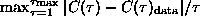, where 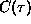 is the autocorrelation function with or without periodic continuation.
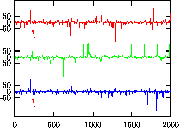
Figure: Upper trace: Data from a stationary Gaussian linear stochastic process (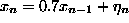) measured by 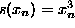. Samples 200-220 are an artefact. With the Fourier based scheme (middle trace) the artefact results in an increased number of spikes in the surrogates and reduced predictability. In the lower trace, the artefact has been preserved along with the distribution of values and lags 1,...,25 of the autocorrelation function.
In Fig.  we show an example fulfilling the null hypothesis of a
rescaled stationary Gaussian linear stochastic process which has been
contaminated by an artefact at samples 200-220. The Fourier based schemes are
unable to implement the artefact part of the null hypothesis. They spread the
structure given by the artefact evenly over the whole time span, resulting in
more spikes and less predictability. In fact, the null hypothesis of a
stationary rescaled Gaussian linear stochastic process can be rejected at the
95% level of significance using nonlinear prediction errors. The artefact
would spuriously be mistaken for nonlinearity. With the program randomize_auto_exp_random,
we can exclude the artefact from the randomization scheme and obtain a correct
test.
we show an example fulfilling the null hypothesis of a
rescaled stationary Gaussian linear stochastic process which has been
contaminated by an artefact at samples 200-220. The Fourier based schemes are
unable to implement the artefact part of the null hypothesis. They spread the
structure given by the artefact evenly over the whole time span, resulting in
more spikes and less predictability. In fact, the null hypothesis of a
stationary rescaled Gaussian linear stochastic process can be rejected at the
95% level of significance using nonlinear prediction errors. The artefact
would spuriously be mistaken for nonlinearity. With the program randomize_auto_exp_random,
we can exclude the artefact from the randomization scheme and obtain a correct
test.
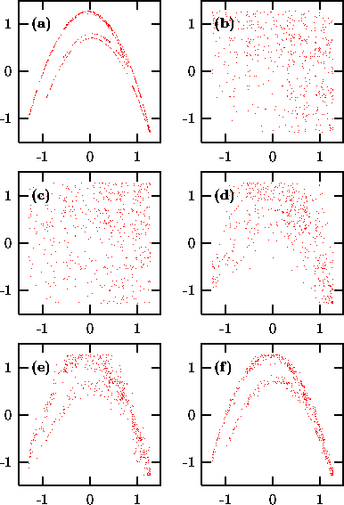
Figure: Randomization of 500 points generated by the the Hénon map. (a) Original data; (b) Same autocorrelations and distribution; (c)-(f) Different stages of annealing with a cost function C involving three and four-point correlations. (c) A random shuffle, C=2400; (d) C=150; (e) C=15; (f) C=0.002. See text.
As an example of a more exotic cost function, let us show the randomization
of 500 iterates of the Hénon map, Fig.  (a). Panel
(b) shows the output of surrogates having the same spectrum and
distribution. Starting from a random permutation (c), the cost function
(a). Panel
(b) shows the output of surrogates having the same spectrum and
distribution. Starting from a random permutation (c), the cost function
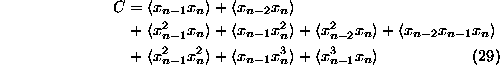
is minimized (randomize_generic_exp_random). It involves are all the higher order
autocorrelations which would be needed for a least squares fit with the ansatz
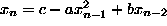 and in this sense fully specifies the quadratic
structure of the data. The random shuffle yields C=2400, panels
(c)-(f) correspond to C=150,15,0.002 respectively.
Since the annealing process can be very CPU time consuming, it is important to
provide efficient code for the cost function. Specifying
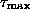 lags for N data points requires
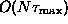 multiplications for the calculation of the
cost function. An update after a pair has been exchanged, however, can be
obtained with  multiplications. Often, the
full sum or supremum can be truncated since after the first terms it
is clear that a large increase of the cost is unavoidable. The driving
Metropolis algorithm provides the current maximal permissable cost for that
purpose.
multiplications. Often, the
full sum or supremum can be truncated since after the first terms it
is clear that a large increase of the cost is unavoidable. The driving
Metropolis algorithm provides the current maximal permissable cost for that
purpose.
The computation time required to reach the desired accuracy depends on the choice and implementation of the cost function but also critically on the annealing schedule. There is a vast literature on simulated annealing which cannot be reviewed here. Experimentation with cooling schemes should keep in mind the basic concept of simulated annealing. At each stage, the system - here the surrogate to be created - is kept at a certain ``temperature''. Like in thermodynamics, the temperature determines how likely fluctuations around the mean energy - here the value of the cost function C - are. At temperature T, a deviation of size 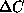 occurs with the Boltzmann probability 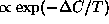. In a Metropolis simulation, this is achieved by accepting all downhill changes (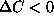), but also uphill changes with probability 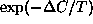. Here the changes are permutations of two randomly selected data items. The present implementation offers an exponential cooling scheme, that is, the temperature is lowered by a fixed factor whenever one of two conditions is fulfilled: Either a specified number of changes has been tried, or a specified number of changes has been accepted. Both these numbers and the cooling factor can be chosen by the user. If the state is cooled too fast it gets stuck, or ``freezes'' in a false minimum. When this happens, the system must be ``melted'' again and cooling is taken up at a slower rate. This can be done automatically until a goal accuracy is reached. It is, however, difficult to predict how many steps it will take. The detailed behavior of the scheme is still subject to ongoing research and in all but the simplest cases, experimentation by the user will be necessary. To facilitate the supervision of the cooling, the current state is written to a file whenever a substantial improvement has been made. Further, the verbosity of the diagnostic output can be selected.